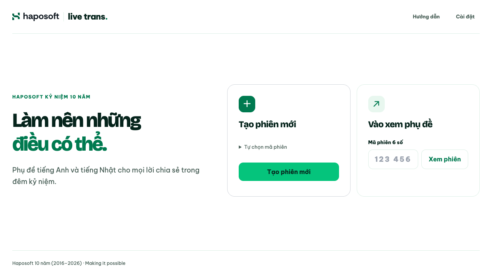
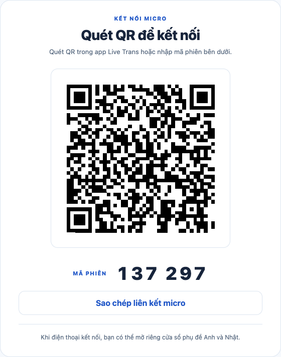
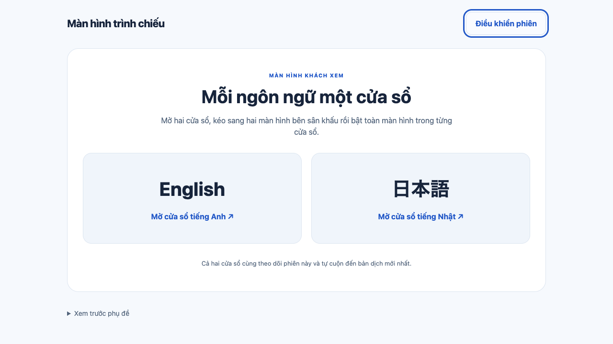

Bắt đầu trong 3 bước
Một điện thoại làm micro. Một màn hình để mọi người theo dõi.
Tải app cho điện thoại
Mở trang Release, chọn bản mới nhất và xem mục Assets.
Android: tải file .apk trong bản mới nhất, mở file và cho phép cài từ nguồn này nếu điện thoại hỏi.
iPhone: quét QR bằng Camera để dùng micro trên Safari, không cần cài app.
Bản iOS dành cho người biết cài IPA
Trong mục Assets, file -unsigned.ipa là bản iOS chưa ký. Cần ký trước khi cài, không cài trực tiếp như APK.
Tạo phiên trên máy tính
Mở trang chính và chọn Tạo phiên mới. Nếu đã có phiên, nhập mã 6 số để vào xem.

Chọn Tạo phiên mới trên máy tính. Kết nối điện thoại
Mở app Live Trans, quét QR hoặc nhập mã phiên. Chọn Bắt đầu và cho phép dùng micro. Nếu không cài app, quét QR bằng Camera để mở micro trên trình duyệt.

Ảnh minh họa. Hãy quét QR hoặc nhập mã trong phiên của bạn. Mở hai màn hình phụ đề
Khi điện thoại kết nối, mở riêng cửa sổ English và 日本語. Kéo mỗi cửa sổ sang một màn hình bên sân khấu, rồi chọn Toàn màn hình trong từng cửa sổ. Nếu trình duyệt chặn cửa sổ mới, cho phép cửa sổ bật lên hoặc mở liên kết trong tab mới. Nói tiếng Việt, ngắt nhẹ giữa các câu; phụ đề tự cập nhật và cuộn xuống.

Mở từng cửa sổ và đặt vào màn hình tương ứng.
Khi đang sử dụng
Mỗi cửa sổ chỉ hiển thị một ngôn ngữ. Nhấn Esc để thoát toàn màn hình; có thể cuộn lại để đọc tối đa 30 câu gần nhất.
Chọn Dừng trên điện thoại để tạm ngừng thu. Trên trang chính, mở Điều khiển phiên: Rời phiên chỉ rời trên máy này; Kết thúc phiên cho mọi người ngắt micro và xóa lịch sử sau khi xác nhận.
Nếu điện thoại ngắt kết nối, trang chính hiện lại QR. Nếu cửa sổ phụ đề mất kết nối máy chủ, chọn kết nối lại trong cửa sổ đó. Kiểm tra mạng và quyền micro khi cần. Điện thoại dùng trình duyệt cần mở trang qua HTTPS.